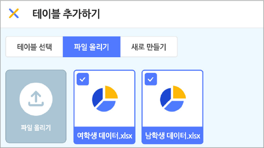

데이터 분석 결과를 활용하여 학급 친구들에게 자신의 키에 맞는 체력이 어느 정도인지 확인할 수 있도록 데이터를 공유하고, 이를 바탕으로 각자가 체력이 부족한 부위를 단련하는 운동 계획을 세울 수 있게 안내하자.
1. 엔트리에서 [데이터 분석] – [테이블 불러오기]를 선택하여 스프레드시트 파일을 가져온다.

2. 차트 탭에서 신장에 따른 체력 측정 결과를 볼 수 있는 차트를 ‘악력‘, ‘윗몸 말아 올리기‘, ‘제자리벌리뛰기’, 이름으로 각각 생성한다.
3. 실행 화면과 오브젝트를 참고하여 프로그램을 작성한다.
- 오브젝트
-
코치(1)
운동장
- 변수
-
성별
아래 블록을 참고하여 프로그램을 작성해 보자.
코치(1)
화면의 크기를 좌우로 조절하면 블록을 크게 볼 수 있어요.
이전
다음